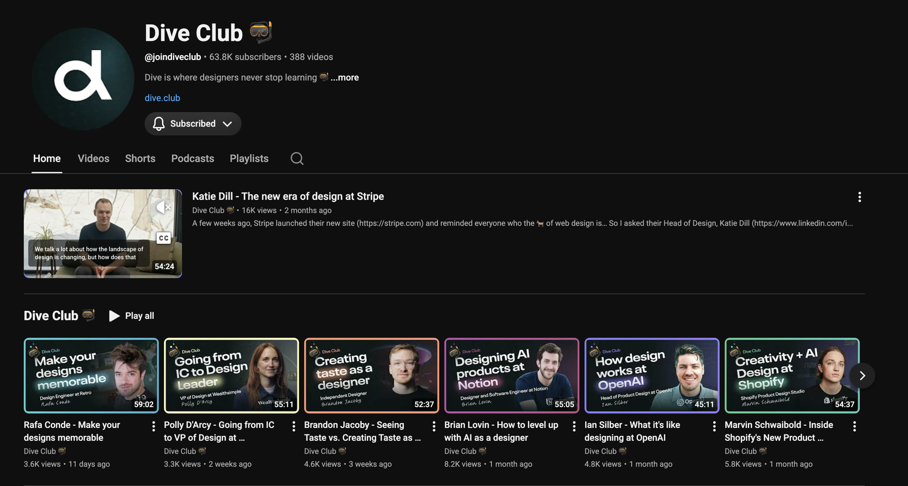
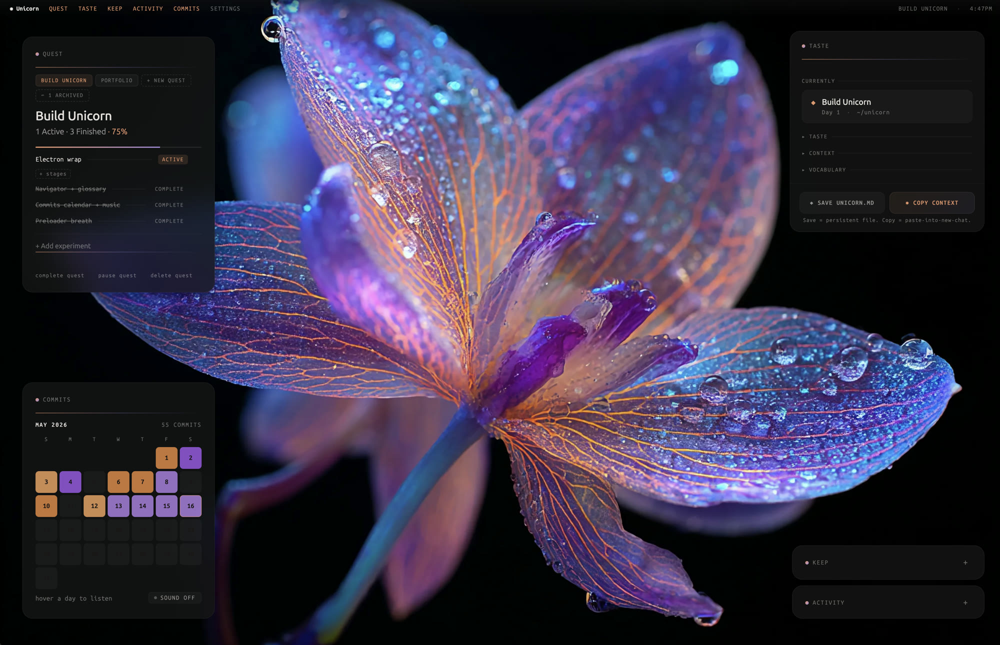
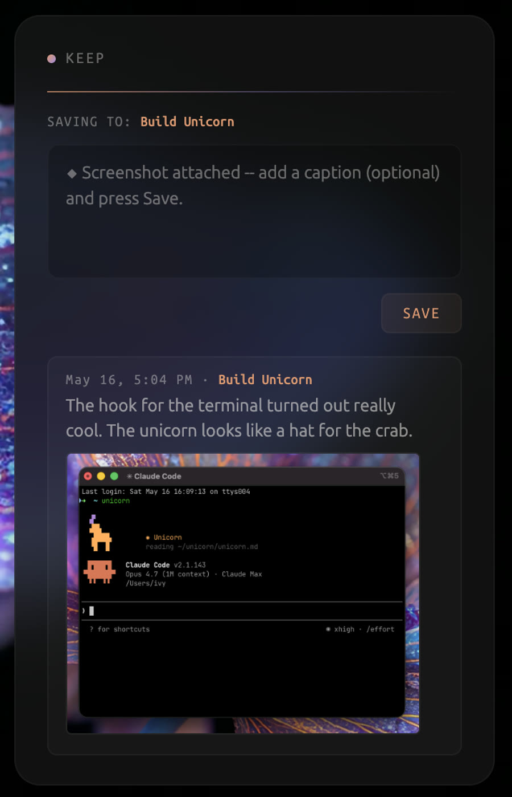
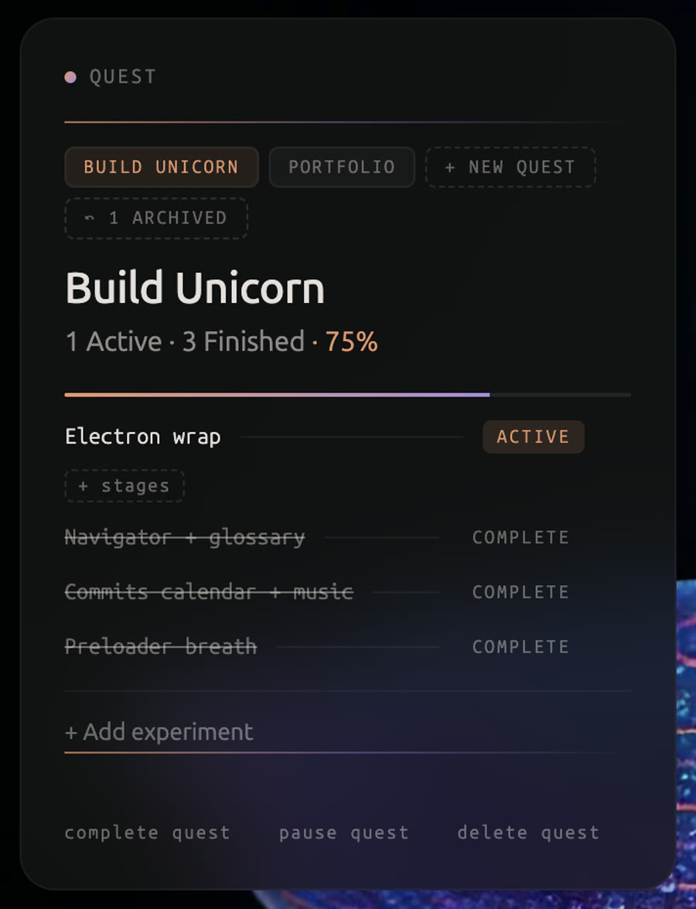
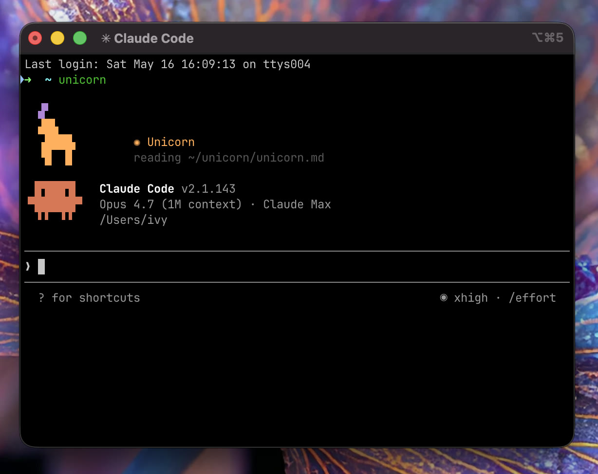

✺ a creative OS · sneak peek
A creative OS for designers experimenting with code. It runs beside Claude Code and holds the reasoning around your work, so it does not evaporate.
Ivy Grzybowski · Design Technologist · capstone
✷ the hook
A hook is a small script that runs the moment a Claude Code session starts. Type unicorn and it prints the mascot and loads your context, so the agent begins already knowing where you were.
✦ the frame
Boris Cherny, creator of Claude Code.
A sneak peek is the method, not an apology.
❀ the exploration
I reached out on LinkedIn to Design Engineers who had been on the Dive Club, the best Product Design podcast out there. Four of them said yes.

✷ from the interviews · anonymized

✷ the Design Engineers, in their words · anonymized
“Nobody is going to be as good at engineering as the AI. But if you do not know the principles, you cannot direct it.”
“If you want to see if someone has grown, do not look at the title. Show me the work they made when nobody was making them.”
✷ a Design Engineer, anonymized
“I keep a vault. I treat it as my long term memory. If you have worked with AI at all, you know context is the huge thing.”

✤ the problem
A session throws off a dozen things worth keeping a day. They scroll out of the chat and disappear. Case studies used to take weeks to compile. Not anymore.
✺ the response
commits, played back as music
◆ what it is


❋ product thinking
❖ what is promised next
The skill and the SessionStart hook are the bridge. It writes a casestory.md as you build. It works now, and only gets better as the models do.
◆ where it is
ivygrzy.com/work/unicorn · live preview · Ivy Grzybowski ✺ Design Technologist